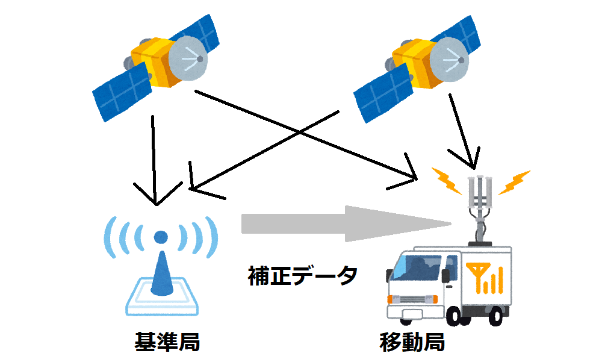
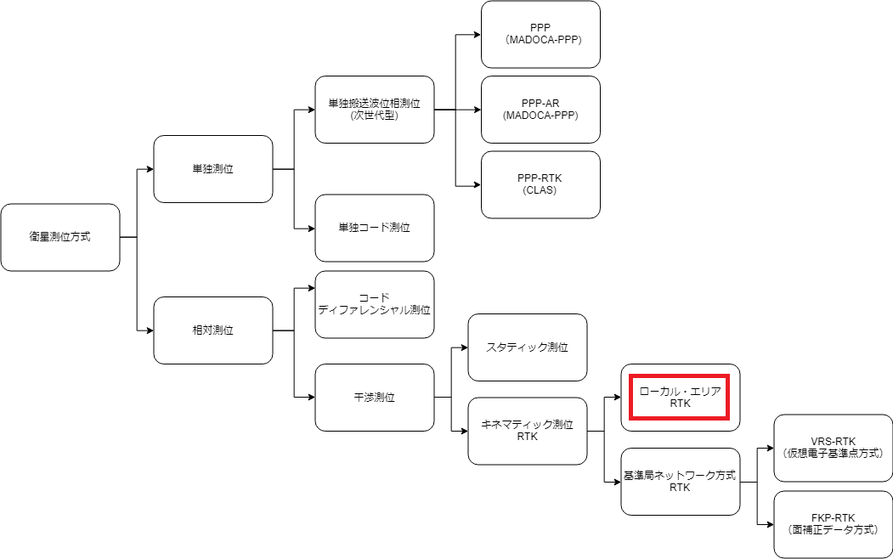
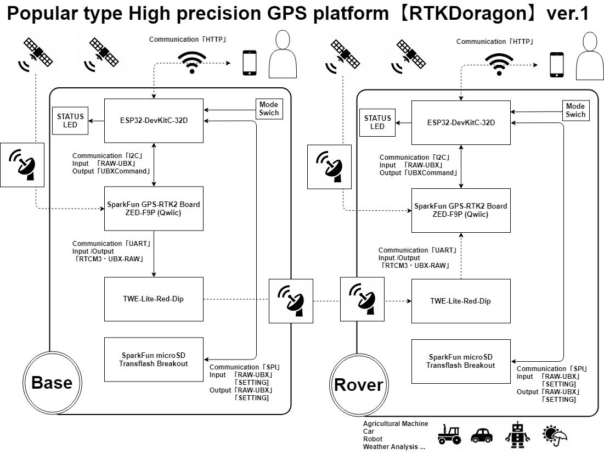
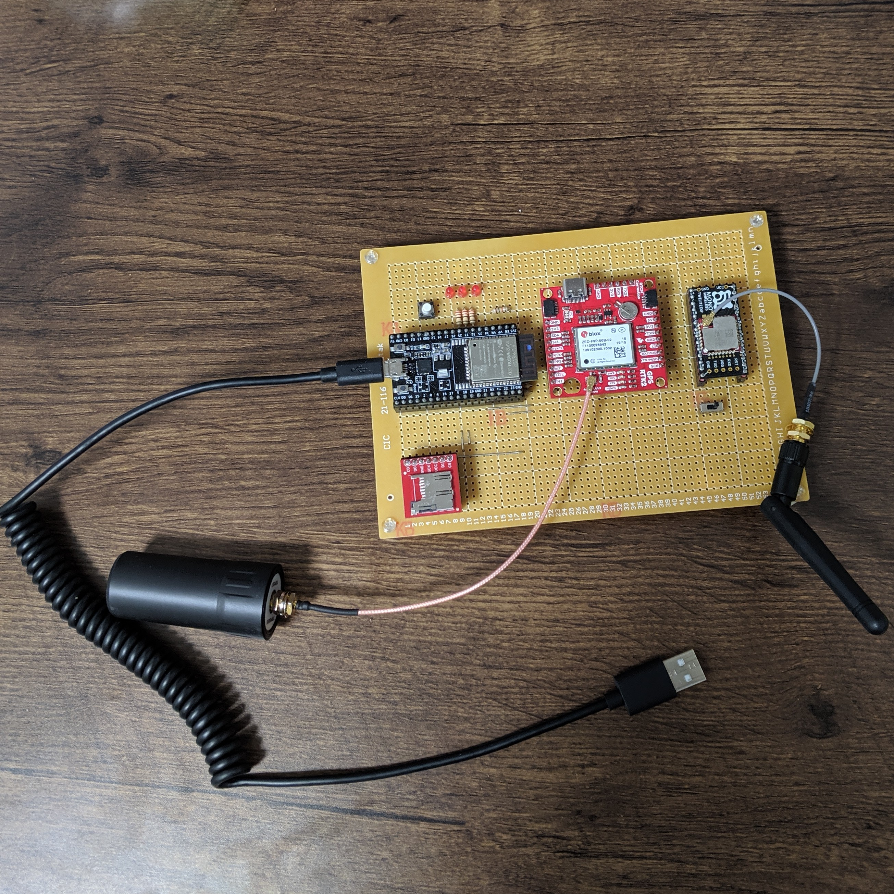
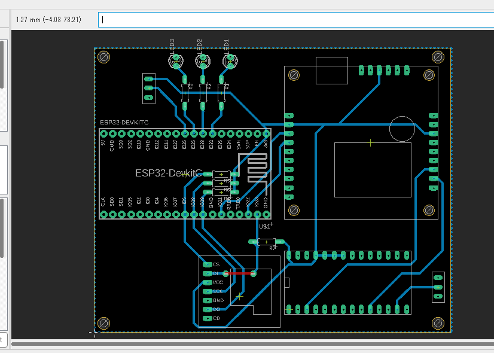
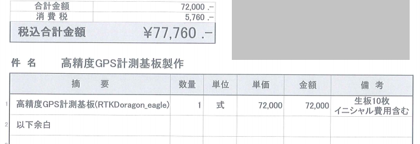
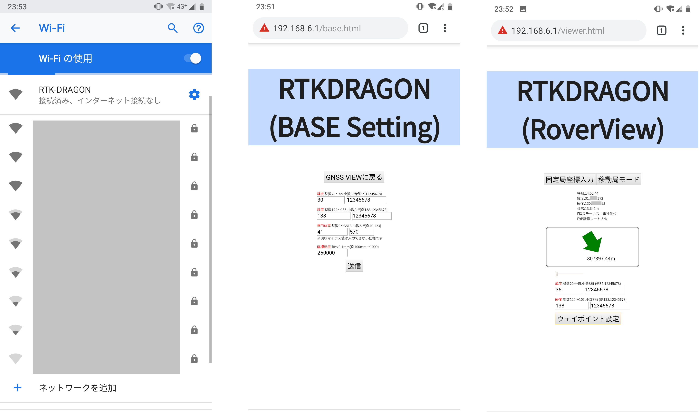

RTKDoragon.
普及型高精度GPSプラットフォーム
開発の背景と動機
これまで、私は、安価に数センチ精度のGPSを利用できる仕組みの構築を行ってきた。以降、開発の背景と動機を紹介する。
近年、GPSの中で数センチの高精度測位が可能な「みちびき(単独搬送波位相測位）」について耳にする。しかし、現状は運用としての一般化レベルまで達していない。
一方、同様に数センチの精度が確保可能な「ローカル・エリアRTK」というものがある。
これもまた、測量士や専門家以外の一般人が利用するには構築の複雑で、機器が高価という課題を残している。
私が開発に携わった自動車運転評価システムのGPSに関して「ローカル・エリアRTK」は前述の問題と、仕組みを確立するのに十分な時間を要するため導入されなかった。
この仕組みはスマホ等に内蔵される数メートルレベルのGPSと比較して、数センチの水平精度測位ができるため、精度を要求する事例として産業界、研究等の活用が期待できる。
そこで、一般ユーザも安価で利用できる仕組み確立することに意義を感じ、休日や平日の退勤後の時間を利用して継続的に開発活動を行っている。
高精度GPSプラットフォームの活用例(屋外のみ)
建設・土木
農業
畜産
自動車
気象学
娯楽
- ゲーム等で利用できるUIデバイス
- GPS人力アート
その他
ローカルエリアRTKの仕組み

ローカルエリアRTKの仕組み
ローカルエリアRTKの位置づけ

ローカルエリアRTKの位置づけ
GPS測位方式ごとの精度と価格比較
| 測位方式 |
単独測位 |
D-GPS |
VRS-RTK |
ローカルエリアRTK |
| 型番 |
M10478-A2Adafruit Ultimate GPS |
VLX-200 |
A325 |
Qwiic ZED-F9P搭載
GPS-RTK2モジュール |
| 価格 |
数千円 |
約25万円 |
約100万円
+
ランニングコスト |
基準局＋移動局
約6万円(2台)
ランニングコスト0円 |
| 水平精度 |
数m～数十ｍ |
約60cm以内 |
約1～2cm |
約1～2cm |
[SYS]RTKDoragon.(ver.1)のシステム構成

RTKDoragon.システム構成図(ver.1)
[HW]RTKDoragon.(ver.1)

RTKDoragon.(ver.1)
[HW]RTKDoragon.(ver.2)

RTKDoragon.(ver.2)

RTKDoragon.(ver.2)基板見積り(10枚製造)
[SW]基準局設定・移動局ビュワWEBアプリケーション(ver.1)

基準局設定・移動局ビュワ(ver.1)
使用言語・開発環境
Language【C++/HTML/CSS/JavaScript】 DevelopmentEnvironment【ArduinoIDE】
検証結果
準備中
工夫した点
ハードウェア
- 基準局と移動局を同等の基板で設計
- 一般的な既存製品は補正データ(RTCM)の利用に別途通信回線を利用するが、
RTKDORAGONは自作の基準局基板にある長距離無線マイコンで伝送するため通信費用が不要
→高精度GNSS補正情報配信サービス利用料:約20000円/ヵ月
→RTKDoragon:0円/ヵ月
ソフトウェア
- GPS設定を有線接続したPCから行うのではなく、ESPマイコンのWI-FI機能を使った
自作ファームウェアにより、ブラウザベースの操作を可能にした
→手持ちのスマホで本体にアクセスポイント接続して基準局と移動局の設定を気軽にできる
苦労した点
ハードウェア
- 初めて個人で回路設計を行い基板設計用CAD導入したが、
操作の仕方や、基板設計のルールを習得するまでに時間がかかった
- 今回は、汎用性という観点で基板設計したため、最適な部品の選定、
調達をするのに、多くの知識を要した
ソフトウェア
- GPSモジュールからバイナリ(UBX)観測データから位置情報を取得する際に、
リトルエンディアンとビッグエンディアンの違いに気づくまでに苦労した
→GPSプロトコルシートを読むことで、気づき、とても良い勉強になった
今後の課題
ハードウェア
- 現在、GPSや無線マイコンなどはDIP化部品のため、普及させるには現実的な価格で
ないため、表面実装部品で回路設計することにより、さらに安価に実現させる
ソフトウェア
-
GPSデータ(NMEAやUBX等)をブラウザからダウンロードできる実装を行い、後解析に利用できるようにする
-
現在はウェイポイント機能において、矢印方位や距離の表示、GPSステータス表示だけのため、
3次元軌跡表示する実装を行い、視覚的表示によるユーザビリティの向上させる
-
APモードは実現しているが、追加機能として、外部サーバーにアップロード機能を用意して
時系列データ記録・解析を可能にさせる
連絡先:mail:- /
Twitter